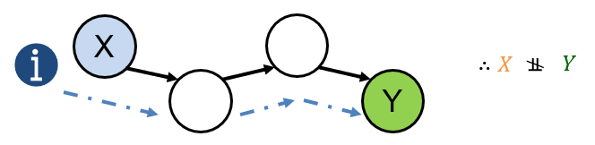
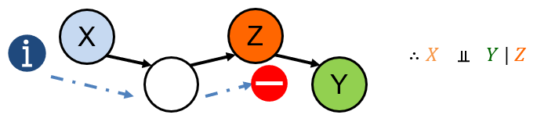

Bayesian Networks: Inference Goals
Last time, we looked at the basic structure and semantics of Bayesian Networks: our window into the world of intuitive probabilistic inference!
That said, let's not lose sight of our goals for how we hope to employ them:
Probabilistic inference using Bayesian Networks accepts some query over network variables \(\alpha\), any observed evidence \(\beta\) and then returns the conditional distribution \(P(\alpha | \beta)\) (which includes non-conditional queries when \(\beta = \{\}\)). In notation similar to our propositional logic KB queries: $$BN.ask(\alpha, \beta) = P(\alpha | \beta)$$
Being able to perform probabilistic queries on the network will then allow us (or our intelligent agent) to make decisions based on the results, just like good old Solicitorbot deciding whether or not to visit a house based on whether or not it believes someone to be home.
While we have been able to intuitively use BNs for some simple queries to be done by hand, we do not yet have this general inference procedure.
Before we formalize it, however, we must make two observations about the extent of what we know:
We do not want inference to consider information in the BN that is irrelevant to the query (i.e., independent of it).
We currently lack an algorithm that will tell us if any two variables are independent (or conditionally independent) given another set.
So, let's see if we can remedy item (2) above to facilitate item (1), and then move on to inference!
d-Separation
Last class, the Solicitorbot example had a simple, 3 variable network, but we can imagine much larger networks with more variables and relationships between one another.
As such, just as we intuited some independence relationships for that simple 3 variable network, we should have a more general rule to analyze networks of arbitrary size.
You can consider a Bayesian Network as defining the channels through which information can flow between variables (like water).
Each node can be viewed as a faucet that can either be:
On / Open: information flows between variables (therefore, variables are dependent).
Off / Closed: information flow is blocked between variables (therefore, variables are independent).

What we need, therefore, are the rules for determining when a faucet is opened or closed.
One of the beautiful things about Bayesian Networks is that we have precisely that formalization simply by looking at the directionality of edges in the graph!
The rules of directional-separation (d-separation) determine a Bayesian Network's independence and conditional independence claims directly from the network's structure.
d-Separation: Path Analysis
Two variables \(A, B\) are independent given some other set of variables \(C\) if *all* undirected paths (any sequence of nodes connected by edges, ignoring edge direction) between \(A, B\) are blocked.
The rules of d-separation decide if information can flow through triplets of nodes \(X, Y, Z\) along an undirected path with one node serving as the "faucet."
Since edges can only be directed 1 of 2 ways between 2 variables, we can analyze the independence rules of each configuration of edges between the triplet's variables to compose the foundations of d-separation.
There are three such "rules" corresponding to each type of triplet:
Rule 1: Forks \(X \leftarrow Z \rightarrow Y\)
Let's return to our Solicitorbot!
Should knowing about whether or not the lights are on tell us anything about whether or not there's a cacophony heard in the house? $$L \stackrel{?}{\indep} C$$
$$L \not \indep C$$ ...because whether or not a house's lights are on tells us something about whether or not someone is home, which in turn tells us something about whether or not a noise will be heard inside!
Should knowing about whether or not the lights are on tell us anything about whether or not there's a cacophony heard once we know whether or not someone is home? $$L \stackrel{?}{\indep} C~|~H$$
$$L \indep C~|~H$$ ...because knowing whether or not the lights are on tells us nothing more about whether there's a noise heard in the house once we know the cause of both, i.e., that someone is home!
A fork \(X \leftarrow Z \rightarrow Y\) is blocked along a path if \(Z\) is given; i.e., if a common cause is given, a fork is blocked.
Rule 2: Chains \(X \rightarrow Z \rightarrow Y\) OR \(X \leftarrow Z \leftarrow Y\)
Suppose we've pivoted to the medical domain wherein MediBot 7000 must make some diagnoses based on observed symptoms.
Suppose also that medicine has determined that the presence of tar in lungs causes lung cancer, which is deposited by smoking, giving us:
Should knowing about whether or not someone smokes tell us anything about whether or not they have lung cancer? $$S \stackrel{?}{\indep} C$$
$$S \not \indep C$$ ...because whether or someone smokes tells us more about whether or not they have tar in their lungs, which in turn tells us more about their likelihood of having cancer!
Should knowing about whether or not someone smokes tell us anything about whether or not they have lung cancer once we know whether or not someone has lung tar? $$S \stackrel{?}{\indep} C~|~T$$
$$S \indep C~|~T$$ ...because knowing whether or not someone smokes tells us nothing more about whether they have lung cancer once we already know the state of the cause of cancer, i.e., that someone has tar in their lungs!
A chain \(X \leftarrow Z \leftarrow Y\) OR \(X \rightarrow Z \rightarrow Y\) is blocked along a path if \(Z\) is given.
Rule 3: Sinks \(X \rightarrow Z \leftarrow Y\)
Suppose now we have a... well... rather artificial, but intuitive, scenario wherein a bell rings if two fair coin flips have the same outcome.
Should knowing about the outcome of one coin flip tell us anything about the outcome of the other? $$A \stackrel{?}{\indep} C$$
$$A \indep C$$ ...because they're independent coin flips! Knowing about one tells us nothing about the outcome of the other without any additional information.
Should knowing about the outcome of one coin flip tell us anything about the outcome of the other once we know whether or not the bell rang? $$A \stackrel{?}{\indep} C~|~B$$
$$A \not \indep C~|~B$$ ...because if we knew that \(A = heads\) and \(B = rang\), then \(C = heads\) by necessity!
...but that's not all!
Consider that if the bell rings, our other inovation, Butlerbot 6000, brings us a cup of tea.
Should knowing about the outcome of one coin flip tell us anything about the outcome of the other once we know whether or not Butlerbot has brought us tea? $$A \stackrel{?}{\indep} C~|~T$$
$$A \not \indep C~|~T$$ ...because if we knew that \(A = heads\) and \(T = brought\), then by necessity, \(B = rang\) and therefore \(C = heads\)!
As such, we have the now, complete rule for sinks:
A sink \(X \rightarrow Z \leftarrow Y\) is blocked along a path if neither \(Z\) nor its descendants are given.
Take Note: the rule for sinks is somewhat "opposite" that of forks and chains -- don't make the novice mistake of thinking they are all the same rule!
So, now that we have the individual components of d-separation down, let's see how to put it all together in an algorithm.
d-Separation: Algorithm
# Returns true if X is independent of Y given Z, else false
d_sep(X, Y, {Z}):
for each undirected path p between X and Y:
openPath = true
for each triplet t along p:
if t is blocked:
openPath = false
break
if openPath:
return false
return true
Let's try out some examples using the Bayesian Network below!
Question 1: $$A \stackrel{?}{\indep} D~|~B, C$$
$$A \indep D~|~B, C$$ ...because there are two paths from \(A\) to \(D\), and both are blocked chains:
\(A \rightarrow B \rightarrow D\) [Blocked] is a chain with \(B\) given
\(A \rightarrow C \rightarrow D\) [Blocked] is a chain with \(C\) given
Question 2: $$A \stackrel{?}{\indep} D~|~B$$
$$A \not \indep D~|~B$$ ...because there are 2 paths from \(A\) to \(D\), but only 1 is blocked, and the other open:
\(A \rightarrow B \rightarrow D\) [Blocked] is a chain with \(B\) given
\(A \rightarrow C \rightarrow D\) [Open] is a chain but \(C\) is *not* given
Question 3: $$C \stackrel{?}{\indep} B~|~A$$
$$C \indep B~|~A$$ ...because there are 2 paths from \(C\) to \(B\), and both are blocked:
\(B \leftarrow A \rightarrow C\) [Blocked] is a fork with \(A\) given
\(B \rightarrow D \leftarrow C\) [Blocked] is a sink with *neither* \(D\), nor its descendants, given
Question 4: $$C \stackrel{?}{\indep} B~|~A, E$$
$$C \not \indep B~|~A, E$$ ...because there are 2 paths from \(C\) to \(B\), and only 1 is blocked:
\(B \leftarrow A \rightarrow C\) [Blocked] is a fork with \(A\) given
\(B \rightarrow D \leftarrow C\) [Open] is a sink with a descendant of \(D\) given \((E)\)
And there you have it! d-separation d-constructed.
Next time: let's talk about probabilistic inference!